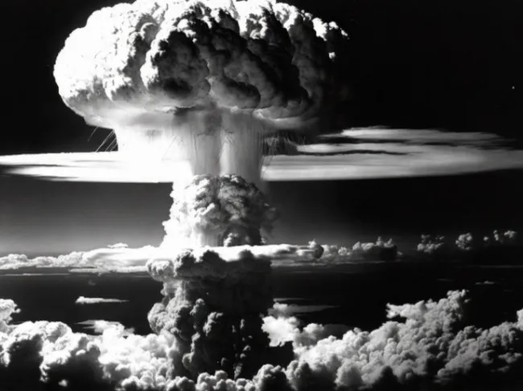

Digitix08's Testsite |
|
| Home | Search Login Games Articole parinti Pastila tehnică |
|
Pastila Tehnică Ziua de 6 August a venit cu o schimbare majoră și în lume, după bombele atomice lansate asupra Japoniei în 1945. Unii au realizat cat de puternici sunt, că mai apoi sa genereze o dezbatere pe muti ani asupra moralității utilizării unei asemenea puteri de distrugere. Japonezii au înregistrat o schimbare radicală, de la cei care se considerau stăpâni pe o arie uriașă din Pacific și Asia continentală la nația profund pacifistă pe care ei știm. Ceilalți... au înțeles că dacă vor să aibă un cuvânt de spus trebuie să aibă bomba atomică, majoritatea țărilor puternice făcând din asta un scop strategic. Istoria se repetă. De fapt, istoria dominației... Bătălia e acum pentru Lună, spațiul extraatmosferic, Arctica. Cred ca fiecare din noi putem medita la implicațiile utilizării științei și
că trebuie să avem cuvintele psalmistului că și măsură: https://images.app.goo.gl/WAvtWq7dy3iNCsbM6  |
|